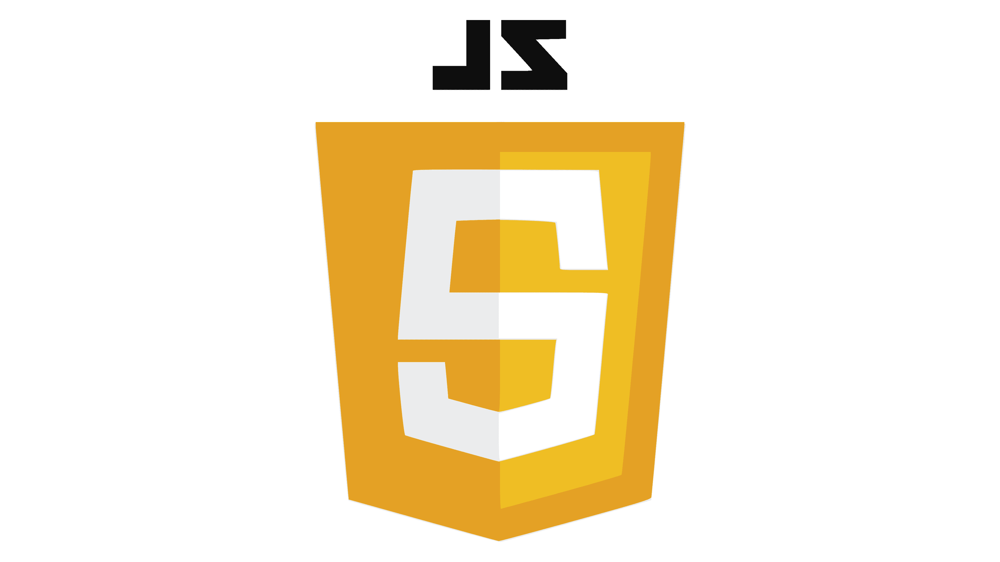

💻 Lenguajes de Programación

- C++ (Arduino Wiring) Control en tiempo real, PWM de servomotores y lectura analógica de Joysticks con eliminación de zona muerta.
- MicroPython (v1.22) Gestión de la cola asíncrona UART y despliegue del Access Point Wi-Fi con servidor web embebido.
- HTML5 / CSS3 / Vanilla JS Renderizado de telemetría vectorizada en vivo con SVG, interacción serial síncrona y transiciones tridimensionales.
🛠️ Herramientas de Desarrollo


- Antigravity IDE & Skills Optimización asistida por IA del frontend, modelado ágil con OpenSpec y diseño iterativo de interfaces didácticas.
- Arduino, Thonny & VS Code Compilación y flashing nativo a placas, interacción interactiva REPL en vivo y centralización limpia del workspace.
- GitHub / Git Versionamiento colaborativo, documentación y resguardo de la arquitectura modular del código de control.
🚀 Despliegue Físico Tripartito
- 1. Laptop (Web Server Principal) Carga local del panel en el cliente y comunicación directa con el hardware mediante la API Web Serial a 115200 baudios.
- 2. ESP32 (Servidor Secundario) Punto de acceso Wi-Fi autónomo. Servidor WebSockets asíncrono para retransmitir diagnósticos y telemetría a dispositivos móviles.
- 3. Arduino Nano (Control Físico) Ejecución a nivel de metal de bucles de control PWM, desacoplamiento y lectura física de potenciómetros e interruptores.
Antigravity IDE & Skills
Utilidad: Asistente de programación con IA. Permitió agilizar el maquetado estético responsive, solucionar bloqueos de Web Serial e integrar metodologías OpenSpec/Brainstorming.
Arduino IDE
Utilidad: Compilación rápida para el microcontrolador ATmega328P. Pruebas dinámicas en Serial Plotter y despliegue del enlace SoftwareSerial a 9600 baudios.
Thonny IDE
Utilidad: Debugging rápido del microcontrolador ESP32 mediante consola interactiva REPL. Flasheo directo de scripts asíncronos y monitor de red AP local.
Visual Studio Code
Utilidad: Entorno de edición central. Estructuración modular de directorios, resaltado de sintaxis multiplataforma y previsualización en tiempo real de gráficos vectoriales SVG.
GitHub & Git
Utilidad: Control de versiones robusto. Facilitó la reversibilidad instantánea de código ante fallos de hardware y el resguardo de la base del repositorio.
OpenSpec & Brainstorming
Utilidad: Desarrollo guiado por contratos y validación de features. Aseguró que las asignaciones físicas de pines coincidieran en esquemas y código de control.
🐙 Control de Versiones con Git y GitHub
El uso de un sistema de control de versiones estructurado aportó beneficios de nivel profesional al equipo de desarrollo:
- Trazabilidad Absoluta: Historial preciso de cambios con autoría y marcas de tiempo para depuración de ramas estables.
- Estadísticas del Repositorio: Análisis automático del porcentaje de uso de cada lenguaje (C++, Python, HTML, CSS, JavaScript).
- Seguridad Operativa: Capacidad de realizar rollbacks asíncronos y recrear el entorno funcional ante cualquier inestabilidad eléctrica.
📋 Documentación en README.md y OpenSpec
La documentación formal es lo que define el éxito a largo plazo de un desarrollo de ingeniería:
- Punto de Entrada README.md: Documento técnico integral que detalla el cableado físico de pines, comandos seriales del protocolo y arranque local.
- Diseño Guiado por Especificaciones: OpenSpec define el comportamiento esperado del sistema mediante contratos legibles por agentes.
- Validación Automatizada: Detección temprana de incompatibilidades de pines o discrepancias en los esquemas electrónicos antes de subir cambios.
🕹️ Dispositivos de Entrada (Sensores)
- Joystick 1 (Giro y Elevación) Potenciómetros analógicos ratiométricos de 10KΩ leídos en pines A0 y A1 por el ADC de 10 bits del Arduino Nano.
- Joystick 2 (Carro y Modo) Eje X analógico (A2) controla el carro horizontal. Pulsador digital (A3) conmuta el modo de operación con debounce de 50ms.
🤖 Procesamiento y Gateway
- Arduino Nano (Controlador Central) ATmega328P de 8 bits. Lee los sensores analógicos, verifica el modo activo y genera señales PWM y de dirección física.
- ESP32 Gateway (Inalámbrico) Xtensa de 32 bits. Provee la red Wi-Fi local AP, aloja el Web Server local y traslada los comandos web por UART2 al Arduino Nano.
- Acoplamiento de Niveles UART Divisor resistivo de voltaje (1kΩ/2kΩ) que reduce de forma segura las señales de transmisión de 5V del Nano a los 3.3V lógicos del ESP32.
⚡ Elementos de Fuerza (Actuadores)
- Driver TB6612FNG #1 (Carro y Giro) Puente H dual de alta eficiencia MOSFET. Controla velocidad PWM y sentido de rotación en 2 motores independientes.
- Driver TB6612FNG #2 (Elevación) Puente H con canales en paralelo para maximizar la disipación térmica y capacidad de corriente (1.2A continuos) en el motor de elevación.
- Motorreductores N20 DC (9V) Motores metálicos de precisión. Relación 30 RPM para rotación pluma libre de balanceo, y 300 RPM para carro y elevación rápidos.
🏗️ Modelado y Fabricación Estructural
El prototipo físico de la grúa torre requirió combinar múltiples tecnologías de diseño y manufactura:
- Diseño Paramétrico en Fusion 360: Modelado completo en 3D de todas las piezas estructurales, poleas, soportes de motores y cajas protectoras para asegurar encajes y holguras milimétricas.
- Estructura de MDF (Corte Láser): Mástil vertical, pluma horizontal y contrapluma cortados en planchas de MDF de 3mm, asegurando ligereza y excelente resistencia a la flexión.
- Piezas en Impresión 3D (PLA): Púas y engranajes reductores a medida, tambor de enrolle para el cable de elevación, poleas con rodamientos y carcasas de protección de los circuitos lógicos.
⚙️ Pruebas en Conjunto y Calibración
La integración final se validó sistemáticamente para garantizar un funcionamiento seguro y coordinado de la grúa:
- Calibración de Entrada Analógica: Configuración de una zona muerta de control (deadband) por software en el sketch de Arduino para evitar vibraciones en reposo.
- Protocolo UART & Level Shifting: Comunicación continua a 115200 baudios sin pérdida de frames, protegida eléctricamente por el divisor de tensión.
- Principio de Exclusividad de Mando: Se validó el bloqueo mutuo. Si el joystick físico de control manual está activo en local, se rechazan las peticiones web remotas, y viceversa, para evitar comandos cruzados peligrosos.